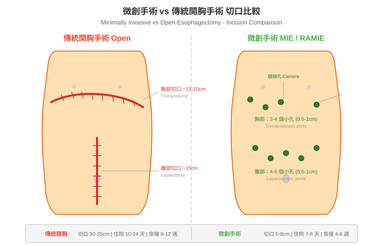

食道癌微創手術說明
什麼是微創手術 (Minimally Invasive Surgery)？
傳統的食道癌手術（開放式手術，open surgery）需要在胸部和腹部各切一道大傷口（通常 15-20 公分以上），將肋骨撐開才能進行操作。這樣的手術雖然有效，但對身體的傷害較大，術後疼痛明顯，恢復時間也較長。
微創食道切除手術 (minimally invasive esophagectomy, MIE) 則是透過數個小切口（通常每個約 1-2 公分），將高畫質攝影鏡頭 (camera) 和特殊的手術器械伸入體內進行操作。醫師在螢幕上觀看放大的手術影像，精確地切除腫瘤並重建消化道。

圖：傳統開胸手術需要 30-35cm 的大切口，微創手術僅需數個 1-2 公分的小孔。
微創手術的類型
1. 胸腔鏡/腹腔鏡手術 (Thoracoscopic/Laparoscopic MIE)
- 使用內視鏡 (endoscope) 搭配細長的手術器械
- 在胸部和腹部各開 3-5 個約 1-2 公分的小孔
- 醫師透過螢幕觀看手術視野進行操作
- 是目前最常見的微創食道手術方式
2. 機器人輔助手術 (Robot-Assisted Minimally Invasive Esophagectomy, RAMIE)
- 使用手術機器人系統（如達文西手術系統，da Vinci Surgical System）
- 醫師坐在操控台前，透過機械手臂進行手術
- 機器手臂可做到人手無法達到的精細旋轉動作（540 度旋轉）
- 提供 3D 立體高畫質影像，放大 10-15 倍
- 手部顫抖會被自動過濾，操作更加穩定精確
3. 單孔微創手術 (Single-Port MIE)
- 僅透過一個切口完成手術
- 傷口更小，美觀度更佳
- 技術難度較高，目前僅少數醫學中心可執行
- 台大醫院在此領域有先驅性的經驗
常見的手術路徑 (Surgical Approaches)
無論是傳統開放手術或微創手術，食道切除手術有幾種常見的路徑：
Ivor Lewis 手術（經腹-經胸路徑）
- 先從腹部進行胃的游離與準備
- 再從右側胸部進行食道切除與吻合
- 適用於食道中下段腫瘤
- 是目前最常使用的手術路徑之一
McKeown 手術（三切口路徑）
- 分別從右側胸部、腹部、頸部三個區域進行
- 可以切除較大範圍的食道
- 適用於食道上段或中段腫瘤
- 頸部吻合若發生滲漏，處理上較胸部安全
經裂孔手術 (Transhiatal Esophagectomy)
- 從腹部和頸部進行，不需打開胸腔
- 避免了胸腔手術的肺部併發症風險
- 適用於特定的食道下段腫瘤
微創手術 vs 傳統開放手術：比較表
| 切口大小 |
數個 1-2 公分小孔 |
15-20 公分以上大傷口 |
| 手術時間 |
約 4-6 小時 |
約 4-6 小時（相近） |
| 術中出血量 |
較少 |
較多 |
| 術後疼痛 |
明顯較輕 |
較為劇烈 |
| 住院天數 |
通常 7-10 天（中位數約 8 天） |
約 10-14 天 |
| 加護病房 (ICU) 天數 |
較短 |
較長 |
| 肺部併發症 |
減少 14-65% |
較高 |
| 生活品質恢復 |
術後 6 週明顯較佳 |
恢復較慢 |
| 傷口美觀 |
疤痕小而隱蔽 |
明顯大疤痕 |
| 腫瘤切除效果 |
與開放手術相當 |
標準治療 |
| 淋巴結清除數目 |
相當或更多 |
標準 |
微創手術的優點
對患者的直接好處
- 疼痛減輕
- 小傷口意味著較少的組織損傷
- 不需撐開肋骨，避免了肋間神經的傷害
- 術後止痛藥物使用量明顯減少
- 恢復更快
- 平均住院天數約 8 天（傳統手術約 10-14 天）
- 可更早開始下床走動
- 更快回歸日常生活與工作
- 肺部併發症降低
- 研究顯示可減少 14-65% 的肺部併發症 (pulmonary complications)
- 這對食道癌患者特別重要，因為許多患者有吸菸病史
- 出血量減少
- 精確的微創器械可減少術中失血
- 降低需要輸血的可能性
- 生活品質較佳
- 術後 6 週的生活品質評估 (quality of life, QoL) 顯示，微創手術患者的恢復明顯優於傳統手術
- 腫瘤治療效果不打折
- 根據 MIRO 試驗 (MIRO trial) 結果，微創手術的完整切除率 (R0 resection rate) 與傳統手術相當
- 微創手術的淋巴結清除數目甚至更多（平均 18 顆 vs 15 顆）
- 三年整體存活率 (3-year overall survival) 達 58.4%
什麼情況適合做微創手術？
適合的情況
- 食道癌 Stage I 至 Stage III（經過適當的術前治療後）
- 患者整體健康狀態允許接受全身麻醉 (general anesthesia) 和手術
- 心肺功能 (cardiopulmonary function) 評估通過
- 腫瘤未侵犯重要的鄰近器官（如主動脈、氣管）
可能不適合的情況
- 腫瘤已有遠端轉移 (distant metastasis)（Stage IV）
- 腫瘤嚴重侵犯周圍重要器官
- 患者心肺功能不足以承受手術
- 曾接受過胸部或腹部大手術導致嚴重沾黏
注意： 適不適合微創手術需由您的主治醫師根據完整評估後決定。每位患者的情況不同，醫師會為您量身選擇最安全、最適合的手術方式。
手術團隊與醫院選擇的重要性
食道切除手術是複雜度極高的手術之一。研究顯示：
- 醫院手術量與治療結果高度相關
- 高手術量醫院（每年 25 例以上）的手術死亡率為 3-8%
- 低手術量醫院的手術死亡率可高達 16-23%
- 每年執行 60 例以上的醫院治療成績最佳
- 醫師經驗同樣關鍵
- 微創食道手術有明確的學習曲線 (learning curve)
- 經驗豐富的團隊能有效處理術中突發狀況
選擇醫院時可以詢問的問題：
- 貴院每年執行多少例食道切除手術？
- 其中微創手術的比例是多少？
- 手術團隊的經驗有多久？
- 術後併發症發生率及死亡率為何？
- 是否有完整的多專科團隊照護？
手術的基本流程
手術前一晚
↓ 禁食、術前準備
手術當天
↓ 全身麻醉
↓ 腹部操作：游離胃部，製作胃管 (gastric conduit)
↓ 胸部操作：切除食道及周圍淋巴結
↓ 重建消化道：將胃管拉上與剩餘食道接合
↓ 放置引流管及空腸造口餵食管
↓ 手術結束，送往加護病房觀察
手術後
↓ 加護病房 1-2 天
↓ 轉至一般病房
↓ 逐步恢復飲食與活動
整個手術過程約 4-6 小時，手術中醫師會將切除的食道及淋巴結送往病理科做詳細的檢驗，以確認癌細胞的擴散範圍。
📋 請填入貴院資料：
- 本院負責科別：_______________
- 聯絡電話 / 分機：_______________
- 門診時間：_______________
- 主治醫師：_______________
- 本院手術特色 / 年手術量：_______________
延伸閱讀
↑